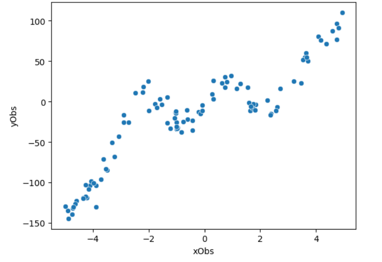

Chapitre 2
Introduction
Très bien, vous avez réussi à créer vos premières fonctions d'entraînement et de validation avec PyTorch, et en plus, vous avez pu tester un modèle de perceptron multicouche très basique. C'est un bon début, mais le modèle ne s'entraîne pas très bien. C'est normal : avec quelques simples couches, vous n'allez pas faire des miracles, surtout sans certains détails que j'ai volontairement omis lors de la partie précédente.
Ce TP va se concentrer uniquement sur les architectures de réseaux de neurones, donc vous devez tous déjà avoir préparé vos boucles d'entraînement et de validation avec CIFAR.
Tout est prêt ?
Pourquoi Linear ne fonctionne-t-il pas sur CIFAR ?
Comme son nom l'indique, la couche Linear permet de multiplier des poids sous forme d'une fonction linéaire en fonction du tenseur d'entrée. Vous avez sûrement déjà fait de la régression linéaire en M1 (si, si, souvenez-vous !). La couche nn.Linear permet de résoudre ce type de relation qui peut être représentée par une simple droite, comme illustré dans le code ci-dessous.
Ne jugez pas, c'est un exemple fait rapidement, uniquement à des fins "éducatives" :)
Avec un simple réseau de neurones linéaire, on obtient en fin de compte une "simple" régression linéaire.
Si je fais un premier test sans entraîner le modèle, la fonction retournée (une droite) est forcément incorrecte.
Cependant, après un peu d'entraînement (seulement 4 ou 5 époques), la fonction générée par mon nn.Linear devient bien plus performante !
Mais que faire si nos données ne ressemblent pas du tout à un nuage de points plus ou moins linéaires, avec une forte corrélation entre eux ? Bonne question (je dois vraiment arrêter de me parler tout seul).
Non-linéarité en PyTorch
PyTorch propose une multitude de fonctions capables de modifier le comportement d'une autre fonction (c'est ce qu'on appelle la "chain rule", j'y reviendrai plus tard), afin d'introduire de la non-linéarité. Par exemple, la fonction ReLU (illustrée ci-dessous) permet de transformer une fonction f(x), représentée par nn.Linear, de manière à ce que toutes les valeurs x de mon tenseur T, transformées par nn.Linear (f(x)), soient égales à x si x est supérieur à 0, sinon elles valent 0.
En mathématiques, cela s'appelle la "chain rule". Autrement dit, si vous avez trois fonctions f(x), g(x), et h(x), vous pouvez tout à fait faire f(g(h(x))). Pour nous, informaticiens, c'est assez simple à comprendre : on modifie x avec la fonction h, le résultat de h(x) est ensuite modifié par la fonction g, et enfin, le résultat de g est modifié par la fonction f. Ce n'est pas très compliqué mathématiquement, mais c'est toujours bon à savoir :)
Regardons maintenant une fonction non-linéaire.
Ajoutons un peu plus de neurones à notre modèle !
Mais surtout, appliquons-y des fonctions non-linéaires...
Grâce à cela, notre réseau peut se "déformer" pour mieux s'adapter aux données et obtenir la fonction de perte la plus optimale !
Mathématiquement parlant
Pourquoi avons-nous besoin de non-linéarité, mathématiquement parlant ? Vous avez de la chance, c'est le moment de faire des maths :)
f(x) = 3x et g(x) = 2x + 10 sont deux fonctions linéaires. Que se passe-t-il si nous les appliquons en "chain rule", comme nous le ferions en PyTorch ?
f = nn.Linear(10, 20)
g = nn.Linear(20, 10)
x = torch.randn(1, 10)
g(f(x))
Voici un exemple de code avec un appel en "chain rule" : d'abord la transformation f, puis g en fonction du résultat de f.
Mathématiquement, lorsque l'on enchaîne f(x) et g(x), cela revient pour chaque x à faire 3 (2x + 10), ce qui est également une fonction linéaire ! Nous avons simplement complexifié notre équation, mais nous n'avons toujours pas résolu notre problème de non-linéarité. Par conséquent, face à un problème complexe comme celui mentionné précédemment, enchaîner des fonctions linéaires ne sera d'aucune utilité si vous n'ajoutez pas de non-linéarité entre elles.
Le même principe s'applique aux convolutions ;)
Et l'image, dans tout ça ?
L'exemple précédent est assez "simple" à comprendre pour un humain. On peut visualiser les courbes et voir comment la fonction globale doit se comporter pour obtenir de bons résultats... mais qu'en est-il pour une image ?
Il est beaucoup plus difficile d'imaginer combien de fonctions non linéaires sont nécessaires pour entraîner un modèle sur des images. En général, un réseau de neurones pour CIFAR a presque toujours besoin de non-linéarité afin de pouvoir extraire efficacement toutes les caractéristiques possibles.
Et encore, nous parlons ici de CIFAR, qui est relativement simple. Maintenant, imaginez le même problème avec des images haute définition en 640x640 pixels, où l'objectif n'est plus seulement de classifier, mais de dire précisément où se trouve un chien sur la photo, par exemple.

Dans ce cas, la complexité des données devient un vrai défi.
Globalement, ajoutez de la non-linéarité dès que possible, sauf à la dernière convolution, où l'on attend une "réponse" finale du modèle.
Préparation du modèle
Dans votre fonction d'entraînement, utilisez l'optimiseur Adam avec un taux d'apprentissage (learning rate) de 0.0001 et un batch size de 128 (à définir dans le DataLoader).
Tâche : Construire un modèle comportant 4 couches de convolutions linéaires avec une dimension cachée (hidden_dim) égale à 32 tout du long.
class my_class(nn.Module):
def __init__(self, hidden_dim = 32, out=10):
super().__init__()
//todo...
def forward(self, x):
x = x.permute(0,2,3,1)
# passe de batch, channels, hauteur, largeur
#à -> batch, hauteur, largeur, channels
//todo (call des nn.Linear du __init__)
Normalement, vous devriez avoir un modèle plus ou moins performant, avec environ 45% de précision.
Le problème avec les MLPs (Multi-Layer Perceptrons) réside dans la manière dont ils "voient" les données. Si on pense en termes d'images, avec notre tensor T de taille batch × channel × height × width, un MLP ne traite les données qu’au niveau des pixels individuels. En d'autres termes, il n'a pas conscience des pixels voisins et ne peut donc pas adapter ses poids en fonction de leur influence, ce qui est évidemment un inconvénient lorsqu'on travaille avec des images.
On pourrait, certes, fournir à notre MLP la taille de l'image plutôt que les trois couches RGB, mais le coût de calcul deviendrait alors drastiquement plus élevé ! Pour réduire ce coût, nous pourrions utiliser une petite fenêtre de poids qui glisserait sur l'image. Le coût serait ainsi lié à cette petite fenêtre plutôt qu'à un MLP massif reliant tous les pixels entre eux. Eh bien, cette technique existe, et c'est ce qu'on appelle les convolutions !
Convolutions
Les convolutions peuvent être comparées à un MLP appliqué de manière glissante sur une fenêtre de pixels, définie par la taille du kernel. Pour mieux comprendre, voici la définition mathématique de base d'un réseau de neurones, celle qui permet de créer nos modèles les plus puissants. En général, les MLP, convolutions et autres architectures de réseaux de neurones reposent sur le produit scalaire (dot-product), qui consiste à multiplier deux vecteurs pour obtenir une seule valeur (un scalaire). C'est pourquoi un MLP est défini avec une dimension d'entrée et une dimension de sortie : on multiplie deux vecteurs de tailles correspondantes (dimension d'entrée), et comme le calcul renvoie une valeur unique, on le répète un certain nombre de fois (dimension de sortie). Cependant, dans un MLP, nous cherchons à faire correspondre les dernières dimensions sans avoir de vision globale des autres informations. Avec les convolutions, nous réalisons un produit scalaire sur une portion de l'image (appelée fenêtre) et répétons cette opération en faisant glisser cette fenêtre sur l'image avec un décalage (stride) défini par l'utilisateur.
Voici une illustration de ce concept, avec ce GIF issu de l'excellent site AnimatedAI.

Convolutional Neural Network
Comme vous pouvez le constater (ou vous l'avez peut-être deviné ? Si oui, bravo), on peut obtenir en sortie - si on le souhaite - la même taille que l'entrée, même en dimension spatiale, tout en agrégeant de l'information spatiale en un seul pixel. Cela permet au réseau de neurones convolutif de raffiner les informations voisines sur un seul et même pixel, tout en stimulant l'information dans la dimension des couches. Bingo ! Avec les convolutions, tous les éléments sont réunis pour mieux traiter l'information : agréger les données spatiales et traiter le format "image" de manière très efficace. D'ailleurs, nous pouvons réduire la taille spatiale en utilisant un pas (stride) supérieur à 1.
Dans ce chapitre, nous allons apprendre à créer un réseau de neurones convolutif et le comparer à celui que nous avons créé précédemment avec un MLP. Allons-y.
A faire - Écrivez un code avec 3 convolutions et un multi-layer perceptron pour réaliser la classification finale (il ressemble presque exactement à ce que nous avons déjà fait dans les précédents cours). Vous devez ajouter de la non-linéarité comme introduit précédemment (attention, il y a un piège lors du dernier passage de neurones !). Enfin, pour introduire cette fonction, toutes les convolutions utilisent un stride de 1, mais nous voulons réduire la taille spatiale à chaque passage ! Pour cela, utilisez nn.MaxPool2d.
Vous devriez obtenir plus de 50% d'accuracy (voire 60%).
Strided Convolutions
Nos codes commencent à ressembler à quelque chose ! Je sais que nous avançons doucement depuis le début de ce cours, en espérant que cela ne soit pas trop frustrant pour vous. Vous aurez toutes les clés à la fin de ce chapitre pour créer n'importe quelle architecture. Bon, continuons avec les convolutions.
Jusqu'à présent, je vous ai demandé d'utiliser MaxPool2d, mais qu'est-ce qui se cache derrière un MaxPool ?
Comme son nom l'indique, il recherche la valeur maximale dans un "pool", un voisinage de pixels (une fenêtre 2x2 par exemple), l'extrait du tenseur d'entrée et le stocke dans le tenseur de sortie. Par conséquent, vous récupérez un seul pixel à partir d'une fenêtre 2x2, soit 4 pixels. Le MaxPool utilise le même comportement que les convolutions, c'est-à-dire que la fenêtre "glisse" sur l'image. Par conséquent, avec une fenêtre 2x2, vous réduisez la taille d'entrée par 2 en hauteur et 2 en largeur.
Question simple (je pense) : comment réduire la taille d'une image uniquement avec des convolutions ? Bon, la réponse est dans le titre du chapitre...
A faire - Modifiez votre code en remplaçant les appels de MaxPool par des convolutions stridées.
Quel est l'intérêt ? Eh bien... c'est difficile à dire. Tout dépend de votre problème, de votre jeu de données, de votre architecture. Bref, vous l'aurez compris, comme souvent en Deep Learning : il faut observer les comportements d'entraînement, ajuster certains hyperparamètres (comme le learning rate, batch size, etc.), mais aussi modifier certains détails dans votre architecture.
Je sais que le Deep Learning est un sujet complexe. Certains enseignants abordent ce domaine en insistant sur des mathématiques très poussées, mais je crois plutôt en votre curiosité. C'est un domaine qui sollicite et cultive la curiosité. Codez, testez, créez des algorithmes de recherche des meilleurs paramètres, posez-vous des questions et imaginez des architectures capables de repousser les limites de ce qui existe déjà.
Maintenant, découvrons la technique la plus puissante et pourtant la plus "simple" du Deep Learning, qui a permis en 2015 de révolutionner les performances des réseaux de neurones. (2015 semble vieux, mais il a fallu tant de temps pour découvrir cette technique...)
Connexions résiduelles
Voilà un sujet important : les connexions résiduelles. Pour aller droit au but, voici une définition simple :
Imaginons une fonction f(x) = 2x.
On pourrait simplement passer la variable z = 3 dans f(x) pour obtenir la valeur 6. Ou alors...
On crée une connexion résiduelle, ce qui signifie que l'on passe z dans f(x) et qu'on additionne le résultat à z lui-même.
Soit : y = f(z) + z = f(3) + 3 = 6 + 3 = 9.
Ce n'est peut-être pas très frappant pour l'instant, mais imaginez cela avec des polynômes de plusieurs degrés ou avec des fonctions extrêmement complexes, comme celles que les algorithmes de descente de gradient et de rétropropagation découvrent dans un réseau de neurones. Cette simple "connexion" permet au réseau de s'entraîner de manière plus efficace, mais surtout de devenir beaucoup, beaucoup, beaucoup plus profond !
Encore un petit exemple mathématique (je vous promets, c'est presque fini pour ce chapitre (ou pas)) :
Regardez ces deux fonctions (f et g). Vous pouvez voir que la convolution de la fonction g appliquée à l'entrée f(x), votre tenseur serait la fonction f et votre filtre, la fonction g.
Le problème avec les réseaux de neurones, c'est que ces réductions successives amenuisent les fonctions à chaque couche. Même si cela aide à extraire des informations utiles de données complexes comme des images, un réseau trop profond finira par tendre vers 0 et n'apprendra plus rien, même si on continue d'ajouter des couches.
Cependant, avec une connexion résiduelle, on évite ce problème, car on réinjecte l'information d'origine de manière résiduelle, comme pour rappeler au réseau : "ne perds pas de vue ce qu'on t'a donné".
Vous avez compris ? Alors, passons au code !
A faire - Reprenez votre code avec MaxPool (ce sera plus simple pour le moment, vous verrez pourquoi plus tard).
1. Après chaque convolution, ajoutez une connexion résiduelle avec le tenseur d'entrée.
2. Pourquoi n'aurait-on pas pu le faire avec une convolution à stride ?
Pour conclure ce chapitre, sachez que si les dimensions de vos tenseurs le permettent, vous pouvez tout à fait faire deux convolutions en parallèle sur un même tenseur x, comme ceci : y1 = f(x) et y2 = g(x), puis additionner les deux résultats : y = y1 + y2 !
Batch normalization
La Batch Normalization est une technique utilisée dans les réseaux de neurones pour améliorer la stabilité et la vitesse d'entraînement. Introduite par Sergey Ioffe et Christian Szegedy en 2015, elle permet de normaliser les activations intermédiaires d'un réseau au sein de chaque mini-batch pendant l'entraînement.
Pourquoi utiliser la Batch Normalization ?
Dans un réseau de neurones profond, les activations des couches intermédiaires peuvent subir de grandes variations à mesure que l'entraînement progresse. Ce phénomène, appelé internal covariate shift, complique l'optimisation du modèle car les couches suivantes doivent constamment s'ajuster aux changements dans les distributions des activations des couches précédentes.
La Batch Normalization combat ce problème en normalisant les activations d’une couche, en ajustant leur moyenne et leur variance à des valeurs plus stables. Cela aide à :
1. Accélérer l'entraînement : en réduisant les oscillations et en rendant le paysage d'optimisation plus lisse, l'entraînement converge plus rapidement.
2. Stabiliser l'apprentissage : les gradients deviennent plus stables, ce qui réduit les risques d'explosions ou de disparitions de gradients.
3. Réduire la dépendance à l'initialisation des poids : le réseau devient moins sensible à l'initialisation des poids, ce qui facilite la configuration de l'entraînement.
Comment fonctionne la Batch Normalization ?
Lors de l’entraînement, pour chaque mini-batch de données, la Batch Normalization fonctionne en trois étapes clés :
1. Calcul de la moyenne et de la variance : Pour un mini-batch de taille m, on calcule la moyenne et la variance des activations des neurones pour chaque dimension.
2. Normalisation des activations : Les activations du mini-batch sont ensuite normalisées en soustrayant la moyenne et en divisant par l'écart-type, avec une petite constante ajoutée pour éviter la division par zéro.
3. Recalibrage : Enfin, les activations normalisées sont transformées via deux paramètres appris : une échelle et un décalage, permettant au réseau de retrouver ses capacités d'expression si nécessaire.
Avantages de la Batch Normalization
- Convergence plus rapide : En réduisant la variance des gradients, la Batch Normalization permet au modèle de converger plus vite.
- Stabilisation : Elle atténue les problèmes de disparition ou d’explosion des gradients dans les réseaux profonds.
- Généralisation : En servant d’outil de régularisation, elle aide à prévenir le surapprentissage, agissant ainsi de manière similaire au dropout.
Utilisation dans PyTorch
En PyTorch, la Batch Normalization est implémentée via la couche `nn.BatchNorm1d` ou `nn.BatchNorm2d` (selon la dimension des données). Voici un exemple simple d'utilisation dans un réseau :
import torch.nn as nn
class SimpleCNN(nn.Module):
def __init__(self):
super(SimpleCNN, self).__init__()
self.conv1 = nn.Conv2d(3, 32, kernel_size=3, stride=1, padding=1)
self.bn1 = nn.BatchNorm2d(32) # Batch Normalization
self.relu = nn.ReLU()
def forward(self, x):
x = self.conv1(x)
x = self.bn1(x) # Normalisation après la convolution
x = self.relu(x)
return x
Dans cet exemple, la normalisation est appliquée après la couche de convolution pour stabiliser les activations.
La Batch Normalization est une technique simple mais puissante, désormais largement utilisée dans presque tous les réseaux de neurones modernes. Elle permet non seulement d'accélérer l'entraînement, mais aussi d'améliorer la performance et la robustesse des modèles.
Créez votre propre objet convolution
En PyTorch, vous pouvez créer votre propre objet qui effectue à la fois une initialisation et un passage en avant (forward). Ce qui est intéressant, c'est de pouvoir créer un objet, par exemple my_conv, qui effectue non seulement une convolution, mais aussi une batch normalization, et enfin une activation. Il suffit ensuite d'appeler cet objet (le constructeur de my_conv) pour créer une instance de cet objet et l'utiliser dans une autre classe PyTorch.
A faire - Codez un objet qui intègre une convolution, une batch normalization, et une activation. Modifiez le code précédent de manière à ce que votre modèle utilise cet objet pour chaque convolution.
Et ensuite ?
Vous avez maintenant toutes les clés pour concevoir des réseaux de neurones performants !
Voici des exercices plus complexes, qui vous aideront à préparer votre rendu pour le projet final.
Bottleneck
Utiliez votre objet nn.Module avec activation, batch norm et convolution.
Créez un autre objet qui fait appel à celui-ci 3 fois !
Une première fois pour réduire l'information.
Une deuxième fois pour maintennir l'information.
Une dernière fois pour revenir à l'information de l'entrée (ou augmenter le nombre de couche vers un nombre de couche sortante défini par l'utilisateur.
Enfin, ajoutez une connection résiduelle dans le cas où la taille de couche sortante est égale à la taille de couche entrante.
Faite un stacking de bottleneck, testez différents filtre (convolution 1x1, 3x3, 5x5), testez différente taille de couche et faite l'entrainement sur CIFAR10.
Attention, c'est un exercice à rendre au complet avec les boucles d'entrainements etc...(faite un git, vous pourrez le mettre en valeur, CIFAR est réputé dans le milieu).
Inverted Bottleneck
Utiliez votre objet nn.Module avec activation, batch norm et convolution.
Créez un autre objet qui fait appel à celui-ci 3 fois !
Une première fois pour augmenter l'information avec une convolution 1x1.
Une deuxième fois pour maintennir l'information avec une convolution >=3x3. Cette convolution est dite "groupé" ou "depthwise". Je ne l'ai pas introduit dans ce webcours, je fais appelle à votre capacité a fouiller sur internet, c'est une technique très réputée. (Petit tips en PyTorch : nn.Conv2d(...., groups=n)
Une dernière fois pour revenir à l'information de l'entrée avec une convolution 1x1 (ou réduire le nombre de couche vers un nombre de couche sortante défini par l'utilisateur.
Enfin, ajoutez une connection résiduelle dans le cas où la taille de couche sortante est égale à la taille de couche entrante.
Faite un stacking de bottleneck, testez différents filtre (convolution 1x1, 3x3, 5x5), testez différente taille de couche et faite l'entrainement sur CIFAR10.
Attention, c'est un exercice à rendre au complet avec les boucles d'entrainements etc...(faite un git, vous pourrez le mettre en valeur, CIFAR est réputé dans le milieu).